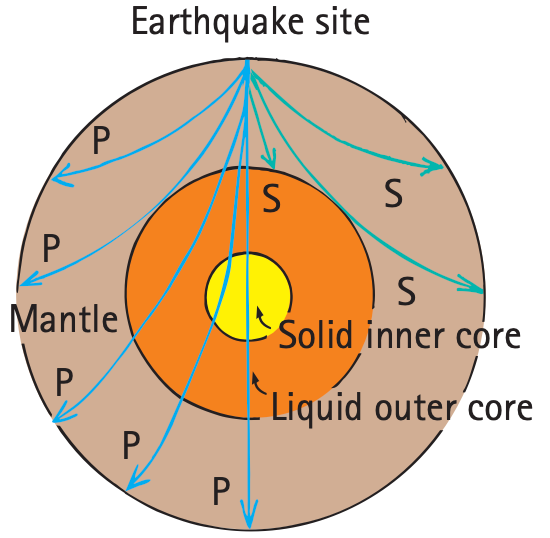

Wave Motion
Most information about our surroundings arrives in some form of waves. It is through wave motion that sounds are transported to our ears, light to our eyes, and electromagnetic signals to our radios and wireless phones. Through wave motion, energy can be transferred from a source to a receiver without the transfer of matter between the two points.
Wave motion can be most easily understood by first considering the simple case of a horizontally stretched rope. If one end of such a rope is shaken up and down, a rhythmic disturbance travels along the rope. Each particle of the rope moves up and down, while, at the same time, the disturbance moves along the length of the rope. The medium, rope or whatever, returns to its initial condition after the disturbance has passed. What is propagated is the disturbance, the energy of wave motion, not the medium itself.
Perhaps a more familiar example of wave motion is a water wave. If a stone is dropped into a quiet pond, waves travel outward in expanding circles, the centers of which are at the source of the disturbance. In this case, we might think that water is being transported with the waves, since water is splashed onto previously dry ground when the waves meet the shore. We should realize, however, that, barring obstacles, the water will flow back into the pond and things will be much as they were in the beginning. The surface of the water will have been disturbed, but the water itself will have gone nowhere. A leaf on the surface will bob up and down, and drift to and fro, as the waves pass, but the leaf will end up where it started. Again, the medium returns to its initial condition after the disturbance has passed—even in the extreme case of a tsunami.
Figure 19.4 was omitted because no matching captured image was supplied.
Let us consider another example of a wave to illustrate that what is transported from one location to another is a disturbance in a medium, not the medium itself. If you view a field of tall grass from an elevated position on a gusty day, you will see waves travel across the grass. The individual stems of grass do not leave their places; instead, they swing to and fro. Furthermore, if you stand in a narrow footpath, the grass that blows over the edge of the path, brushing against your legs, is very much like the water that doused the shore in our earlier example. While wave motion continues, the tall grass swings back and forth, vibrating between definite limits but going nowhere. When the wave motion stops, the grass returns to its initial position.
Practicing Physics
Here we have a sine curve that represents a transverse wave. With a ruler, measure the wavelength and amplitude of the wave.

Wavelength __________
Amplitude __________
Transverse Waves
Fasten one end of a rope to a wall and hold the free end in your hand. If you suddenly shake the free end up and then down, a pulse will travel along the rope and back (Figure 19.5). In this case, the motion of the rope (up and down arrows) is at right angles to the direction of the wave speed. The right-angled, or sideways, motion is called transverse motion. Now shake the rope with a regular, continuing up-and-down motion, and the series of pulses will produce a wave. Because the motion of the medium (the rope, in this case) is transverse to the direction the wave travels, this type of wave is called a transverse wave.

Waves in the stretched strings of musical instruments are transverse. We will see later that electromagnetic waves, which make up radio waves and light, are also transverse.
Longitudinal Waves
Not all waves are transverse. Sometimes the parts that make up a medium move to and fro in the same direction in which the wave travels. Motion is along the direction of the wave rather than at right angles to it. This produces a longitudinal wave.
Both a transverse wave and a longitudinal wave can be demonstrated with a spring or a Slinky stretched out, as shown in Figure 19.6. A transverse wave is produced by shaking the end of a Slinky from side to side in a direction perpendicular to the Slinky. A longitudinal wave is created by rapidly pulling and pushing the end of the Slinky toward and away from you in a direction parallel to the Slinky. In this case, we see that the medium vibrates parallel to the direction of energy transfer. Part of the Slinky is compressed, and a wave of compression travels along the spring. In between successive compressions is a stretched region, called a rarefaction. Both compressions and rarefactions travel in the same direction along the Slinky. Sound waves are longitudinal waves.

Waves that have been generated by earthquakes and that travel in the ground are of two main types: longitudinal P waves and transverse S waves. (Geology students often remember P waves as faster “push–pull” waves, and S waves as slower “side-to-side” waves.) S waves cannot travel through liquid matter, but P waves can travel through both molten and solid parts of Earth’s interior. Study of these waves reveals much about Earth’s interior.

The wavelength of a longitudinal wave is the distance between successive compressions or, equivalently, the distance between successive rarefactions. The most common example of longitudinal waves is sound in air. Elements of air vibrate to and fro about some equilibrium position as the waves move by. We will treat sound waves in detail in Chapter 20.